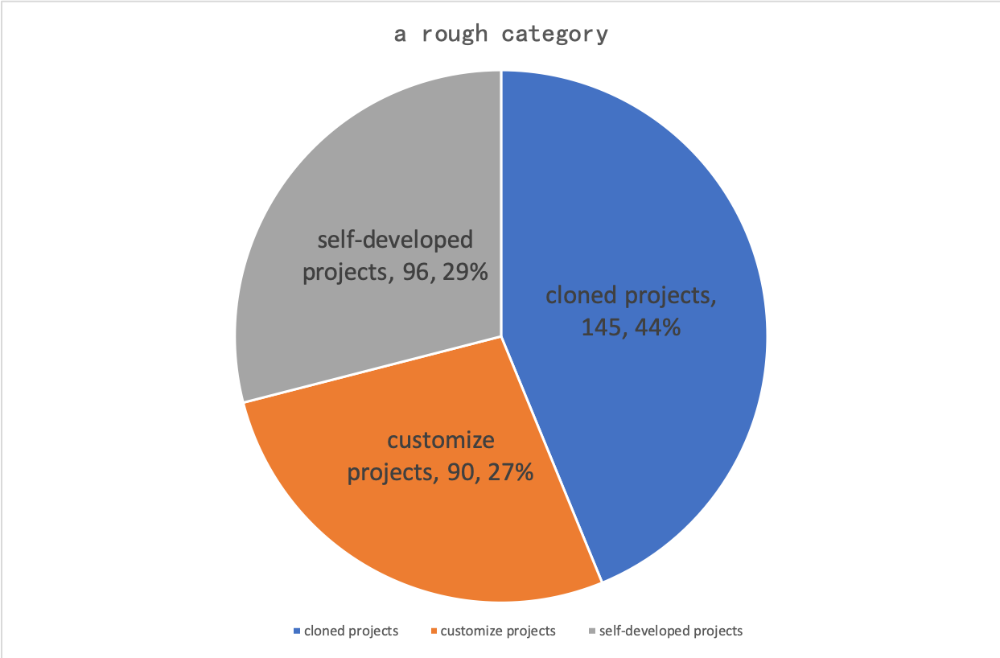
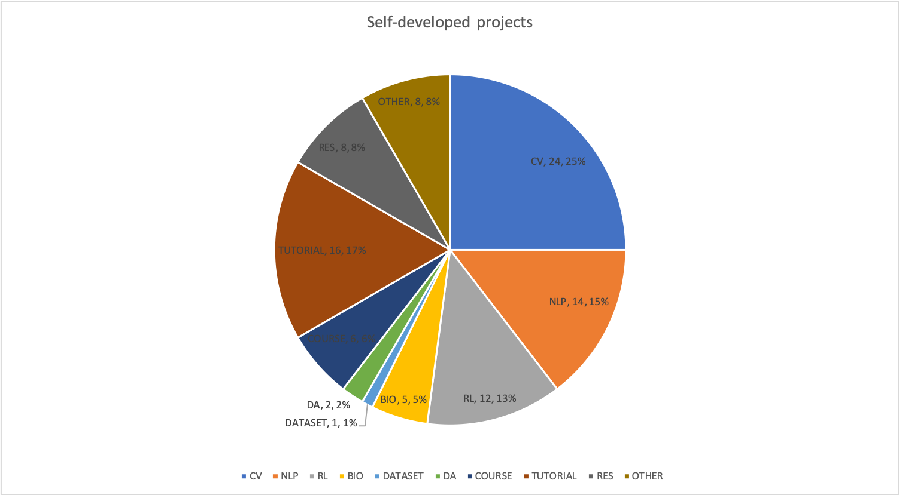

<!--
Copyright © 2019, empirical software engineering team from Peking Uninversity and ISCAS, All rights reserved.

Written by:
  Jiaxin Zhu
-->

<script src='js/header.js'></script>
    <main role="main">

      <section class="jumbotron text-center">
        <div class="container" style="max-width:800px">
          <h1 class="jumbotron-heading" style="margin-bottom:30px">AI项目分类</h1>
          <p class="lead text-muted" style="font-size: 19px; text-align: left; margin-top:50px">
          动机：AI，特别是深度学习，近年来在研究领域和工作市场特别流行。许多研究和调查致力于发现新的神经网络架构以及使AI应用的开发更容易。但是，人们对于整个AI应用世界
          的了解却很少，比如：人们都构建什么类型的AI应用？这里，我们尝试揭示AI应用世界的结构。
          <br /> <br />
          目标：我们想人工划分出合理的类别。然后，通过开发自动化的方法（有监督的或无监督的）来将每个AI项目划分到合适的类别中。如果可能的话，我们也想为每个AI项目分配一个
          日期（比如年），来发现近年来AI在各领域应用趋势的变化。
          <br /> <br />
          初步探索：我们首先在WoC上对tensorflow项目进行了初步探索。WoC是一个用于挖掘整个开源版本控制系统(VCS)数据的平台。 <br />
          我们首先在WoC上过滤出所有包含’tensorflow‘单词的python文件，因为目前人们广泛使用Python进行AI应用的开发，并且使用tensoflow必须的Python文件必须包含’import tensorflow‘或
          ’from tensorflow‘语句。接着，通过利用WoC提供的blob-to-commit和commit-to-project映射，我们识别出231,867个使用tensorflow的项目。鉴于找到所有使用tensorflow的
          commit和使用tensorflow的项目要花费很长的时间（大概4天），我们首先随机筛选了100个包含使用tensorflow的blob，然后找到了1291个包含这些blob的项目。然后我们人工检查了这1291个
          项目，并将他们分类。我们首先排除了那些不是托管在GitHub上面的项目（为了方便排除fork的项目），然后我们通过GitHub API返回项目的元信息，通过检查返回的json数据的fork域，来排除
          fork的项目。我们最终得到331个项目。
          <br />
          我们接下来人工检查了这331个项目并单独将他们分类，然后将我们的分类结果对照一遍。我们首先将这些项目分为三大类：克隆的项目，定制的项目以及自己开发的项目。克隆的项目类似于fork，将
          项目完整克隆下来，并上传到GitHub上，因此不能通过fork标签来排除他们。定制的项目是在克隆的项目的基础上，进一步对项目进行微小的修改。自己开发的项目是由自己或自己的团队独立开发的。
          这三类的情况如下图所示：
          <br />
          
          <br />
          尽管我们前面已经通过fork标签去除了fork的项目，从上图可以看到，仍然有很多克隆的项目。具体情况如下表，有136个项目克隆自tensorflow的主仓库，4个项目克隆自edward仓库（edward是一个概率编程语言），
          2个项目克隆自libspn（libspn是一个用Sum-product网络进行学习推理的库），3个项目克隆自Keras（Keras是另一个构建在tensorflow上面的流行机器学习库）。
          <table class="table">
            <caption class="text-center">clone projects</caption>
             <tbody>
                <tr>
                   <td>cloned from</td>
                   <td>tensorflow</td>
                   <td>edward</td>
                   <td>keras</td>
                   <td>libspn</td>
                   <td>sum</td>
                </tr>
                <tr>
                   <td>number</td>
                   <td>136</td>
                   <td>4</td>
                   <td>3</td>
                   <td>2</td>
                   <td>145</td>
                </tr>
             </tbody>
          </table>

          定制项目情况如下表。其中42个项目是关于个人博客备份的，这些项目均包含相同的使用tensorflow的文件。此外，还有一些对其他项目进行轻微修改的克隆项目。具体来说，有43个项目对tensorflow库进行修改，
          使tensorflow可以在不同的平台如安卓，IOS上运行。还有5个项目对谷歌的seq2seq仓库进行修改，增加了新的功能。
          <table class="table">
            <caption class="text-center">customize projects</caption>
             <tbody>
                <tr>
                   <td>original project</td>
                   <td>blog files</td>
                   <td>tensorflow</td>
                   <td>seq2seq</td>
                   <td>sum</td>
                </tr>
                <tr>
                   <td>number</td>
                   <td>42</td>
                   <td>43</td>
                   <td>5</td>
                   <td>90</td>
                </tr>
             </tbody>
          </table>
          排除掉克隆的项目和定制的项目后，剩下96个自己开发的项目。经过讨论，我们暂且划分为10类：计算机视觉(CV)，自然语言处理(NLP)，强化学习(RL)，生物信息(BIO)，数据集(DATASET)，
          数据分析(DA)，课程(COURSE)，教程(TUTORIAL)，研究(RES)和其他(OTHER)。CV和NLP是深度学习技术被广泛应用的领域。RL是与深度学习并列的机器学习领域，在近年来受到越来越多的关注，
          它包括游戏AI，自动驾驶等应用场景。BIO包括医学和健康应用，是AI技术应用的一个新兴领域。DATASET是包含公开数据集以及使用它们的脚本的仓库。DA是那些结构化数据分析的仓库，
          这里，视频、照片和文本属于非结构化数据，结构化数据是指类似数据库的数据形式，结构化数据分析的一个应用场景是电影推荐。COURSE是那些流行的公开课如CS224n和Udacity的课程仓库。TUTORIAL
          是包含AI技术学习材料的仓库，如代码例子，文档等。RES是那些关于论文代码实现和复现的仓库。剩下的没有划分到以上各类的项目就被划分到OTHER类别中，比如一些基于AI框架搭建的库。
          <table class="table">
            <caption class="text-center">self-developed projects</caption>
             <tbody>
                <tr>
                   <td>category</td>
                   <td>CV</td>
                   <td>NLP</td>
                   <td>RL</td>
                   <td>BIO</td>
                   <td>DATASET</td>
                   <td>DA</td>
                   <td>COURSE</td>
                   <td>TUTORIAL</td>
                   <td>RES</td>
                   <td>OTHER</td>
                   <td>sum</td>
                </tr>
                <tr>
                   <td>number</td>
                   <td>24</td>
                   <td>14</td>
                   <td>12</td>
                   <td>5</td>
                   <td>1</td>
                   <td>2</td>
                   <td>6</td>
                   <td>16</td>
                   <td>8</td>
                   <td>8</td>
                   <td>96</td>
                </tr>
             </tbody>
          </table>
          <br />
          
          <br />
          <br />
          结果分析：通过我们的人工检查，我们可以看到：
          <ul>
            <li style="text-align: left">获得的数据中有大量的fork的项目</li>
            <li style="text-align: left">尽管去除了fork的项目，仍然有大量不是通过fork产生的克隆项目</li>
            <li style="text-align: left">一些项目拷贝了相同的使用tensorflow的文件, 比如那些42个个人博客备份项目</li>
            <li style="text-align: left">CV, NLP, RL和TUTORIAL项目支配了个人开发的项目。存在这么多的TUTORIAL项目从侧面表明了AI的流行</li>
          </ul>
          <p class="lead text-muted" style="font-size: 19px; text-align: left; margin-top:20px">
          下一步计划：
          <ul>
            <li style="text-align: left">基于流行AI框架找到所有的AI项目</li>
            <li style="text-align: left">人工检查这些项目给我们的启示是找到的AI项目中有大量的fork项目，非fork的克隆项目，以及定制项目，这些项目在后续的研究中需要去除掉。
               我们可以通过拥有相同的commit来识别克隆的项目。但是对于定制项目，我们现在的想法是：拥有超过一定比例（如90%）相同的blob对象的项目为定制项目。</li>
            <li style="text-align: left">开发出自动化的方法（如关键词匹配或者LDA，KMeans这样的无监督方法）来将如此大规模的项目划分到合适的类别中 </li>
          </ul>
          </p>
          </p>
          <p class="lead text-muted" style="font-size: 21px; text-align: left; font-weight:bold; margin-top:50px>Datasets and scripts"> 数据集和脚本</p>
          <p class="lead text-muted" style="font-size: 19px; text-align: left; margin-top:5px"> 数据来源: World of Code</p>
          <p class="lead text-muted" style="font-size: 19px; text-align: left; margin-top:5px"> 数据类型: git对象 </p>
          
          <p class="lead text-muted" style="font-size: 19px; text-align: left; margin-top:5px"> 更多细节:
          <a href="https://bitbucket.org/swsc/overview/src/master/">完整描述</a> </p>
          <p class="lead text-muted" style="font-size: 16px; margin-top:50px">论文: </p>
          <p class="lead text-muted" style="font-size: 16px; font-style:italic; text-align: left">
          Ma Y, Bogart C, Amreen S, et al. World of code: an infrastructure for mining the universe of open source VCS data. 
          Proceedings of the 16th International Conference on Mining Software Repositories. IEEE Press, 2019: 143-154.
          </p>
          
        </div>
      </section>
<script src='js/footer.js'></script>
